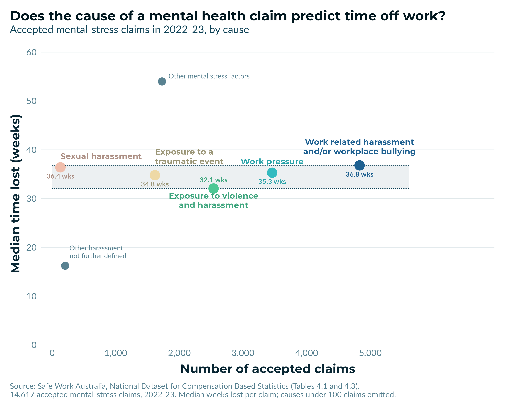

A few weeks ago I shared Safe Work Australia data showing that a mental health claim now means about eight months off work, against about nine weeks for a typical physical injury. What that figure doesn't tell you is whether the average hides a lot of variation between the causes of the mental health claim. Ongoing feelings of work pressure and witnessing a traumatic event are very different experiences, and it would be reasonable to expect them to lead to very different recoveries.
So does time away from work differ depending on the cause of the claim?
To answer this, I used Safe Work Australia's compensation data covering the 14,617 accepted mental-stress claims in 2022-23, broken down by the coded cause of each claim. The coloured points represent the five most common named claim types. The two other points represent "other" categories, used when the cause of a claim doesn't fit any of the named types.
The figure below plots each cause on two dimensions. How common it is runs on the horizontal axis, and the median number of weeks the worker was off is on the vertical.

Here's what I found:
1) The five named causes are three times apart in how often they happen. Work related harassment and/or workplace bullying is the most common, producing 4,831 accepted claims. This was three times the 1,616 that came from exposure to a traumatic event.
2) But these claims types are almost indistinguishable in how long people are away. The median time lost runs from 32.1 weeks to 36.8 weeks across all five, a spread of 4.7 weeks, or about 15 per cent.
3) Interestingly, the two "other" categories are the only ones that fall outside the band, and they fall on opposite sides of it. Other mental stress factors sits at 54.0 weeks, longer than any named cause, and other harassment not further defined sits at 16.2 weeks, shorter than any of them.
There hasn't always been this level of consistency. In 2014-15, the median claim for exposure to violence and harassment cost 10.2 weeks, roughly half of what bullying, work pressure or a traumatic event cost. Some of that gap has since closed because the category was redefined in 2022-23 to take in harassment as well. But at least according to the most recent public data, time off from a mental health claim doesn't differ much depending on the cause of the claim.
The cause of a claim is useful for deciding what to prevent, because the counts really do differ. It's much less useful for planning what happens once a claim is accepted. That side is probably better planned on the assumption that any accepted psychological claim is a long one, whatever caused it.